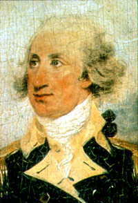
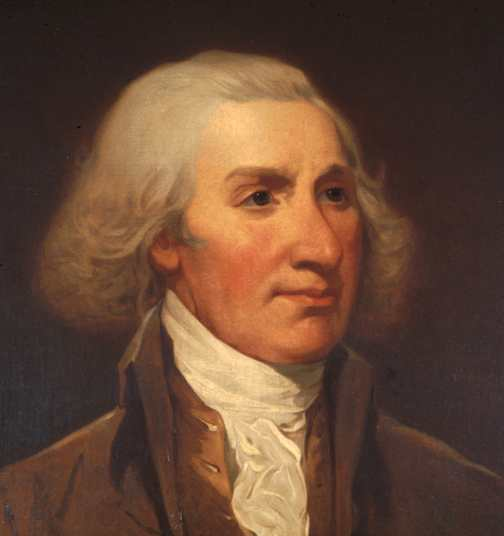

|
by Stefan Bielinski Philip Schuyler was born in November 1733. He was the sixth child (and eldest surviving son) of Johannes and Cornelia Van Cortlandt Schuyler. He grew up at the Schuyler house in Albany and on the family farm at the Flats. Losing his father on the eve of his seventh birthday and several uncles during the 1740s as well, the boy grew up with his younger brothers and was schooled at home. In 1748 he was sent to New Rochelle to be educated by Peter Stouppe - a French Protestant minister. By that time, he was being groomed to take over family leadership in the years to come. Returning home in 1751, Philip began to show symptoms of the gout and pleuresy that would plague him for the rest of his life. But that summer, he undertook a traditional rite of passage with a trip into the Mohawk country to experience the Indian trade. During that decade he was counselled by and learned from two early American icons, his aunt Margarita Schuyler - who lived at the Flats, and John Bradstreet - a British officer in Albany to procure supplies and transport them to the frontier. In September 1755, twenty-one-year-old Philip married Catherine Van Rensselaer, daughter of the Lower or Claverack manor. A few months later the first of their fifteen children was baptized in the Albany Dutch church - where both parents were prominent members. At that time, they were living with his mother in the large and rambling Schuyler house at Albany's main intersection. In 1755, Philip was commissioned a Captain and empowered to raise a militia company that would build fortifications north of Albany. In 1756, he accompanied Bradstreet to Oswego where he learned the business of military supply and also experienced disillusionment when that outpost fell to the French. Back home in Albany, in 1756 Schuyler was elected to the common council as assistant alderman for the first ward and was able to obtain the contract to operate the ferry that connected Albany with Greenbush. He also held a provincial appointment as commissioner of the excise (import tax) and procured supplies and provisions for Bradstreet as well. Philip Schuyler returned to active service. As an officer in the British supply train, he took part in attack on Ticonderoga and in Bradstreet's capture of Fort Frontenac. Stationed for the most part at Albany, he served in Bradstreet's quartermaster's department for the remainder of the war. By 1761, he had begun to gather resources that would enable him to build his own landed estate south of the Beaverkill that became Schuyler Mansion. But in March, Schuyler went to England to broker settlement of Bradstreet's quartermaster's accounts leaving his mentor with the Schuyler family and in charge of the actual construction of his new home. When he returned to Albany at the end of 1762, he found John Bradstreet living with his family in his new Georgian mansion. Philip Schuyler was elected to the New York General Assembly in 1768. He served until that colonial body disbanded and was replaced by an extra-legal Provincial Congress in 1775. It was in the Assembly that Philip Schuyler began to emerge as a leader of the opposition to post-war British restrictions and strictures. During that time, his business involved the harvesting of farm and forest products on his extensive Hudson Valley estates and shipping them to New York on his own sloops and schooner. Trading on his inherited real estate and family credit, by the eve of the Revolution, the forty-three-year-old American had emerged as one of the wealthiest landholders in the region. However, his success rested on already functional estates that needed more independent access to markets and resources to develop further. Thus, he had little trouble supporting the resistance activities that eventually made colonists into revolutionaries! In June 1775, he was appointed one of the four Major Generals of
the Continental army by the Continental Congress. He served until
he was replaced in 1777 and finally resigned his commission in April
1779. He then returned to the Continental Congress. He was selected to the New York State Senate in 1780 and was appointed
one of the first two United States Senators for New York in 1788.
He served until 1791 and later from 1797 to January 1798 when another
attack of gout forced him to resign. In 1790, Schuyler Mansion was configured on the first ward census with eight family members and thirteen slaves. A decade later, his household, still included eleven slaves. In June 1803, this Philip Schuyler filed his will. He died on November 18, 1804 and was buried in the Ten Broeck family vault. Later, his remains were removed to Albany Rural Cemetery and a large monument was erected that stands today. His will divided an extensive estate among his many heirs. General Philip Schuyler was the most notable son of the most important early Albany family! He also was one of the wealthiest community residents with extensive client lists in Albany and throughout the region. He probably was the only Albany native of his day with a reputation beyond the region. However, he only held one Albany municipal office and much of his business was conducted beyond/away from the mainstream Albany commerical establishment. Much of his achievement was beyond the confines of his birthplace. That said, many things in the community today commemorate his life. Because so much community iconography is focused on him, Philip Schuyler is one of the most-recalled figures in early Albany history. Although his papers are scattered, they are voluminous and his life has been closely interpreted by several generations of historians. In the process, his story has been mixed (made interchangeable) with that of his home town. Our task is to place "the General" in his proper Albany context and not let his interesting, significant, and largely beyond Albany careers speak for the more complex stories of the growth and development of this early American city!
The ultimate intent of this biography is to place a great man in his local context and to leave his out-of-Albany career in the able hands of Don Gerlach and others. This will be a daunting task because Philip Schuyler rarely held Albany offices and was not among its major city-based businessmen. We will come to terms with this outstanding native son in the future. From a miniature of Philip Schuyler painted by John Trumbull about 1792 and copied from the dust jacket of Proud Patriot. Original in the Yale University Art Gallery. Mirror-image copy of a portrait copied from the Trumbull miniature by Jacob H. Lazarus (1822-91) in 1881. The painting is on display at the Schuyler Mansion State Historic Site, Albany. A calendar entry for his will appears in CW. The document recorded December 10, 1804) has been transcribed and appears online. Legacy: Philip Schuyler Elementary School; Philip Schuyler Apartments (formerly a high school of the same name); a statue of the General in front of city hall; monument at Albany Rural Cemetery; Schuyler Street; Schuyler Meadows Country Club; Schuylerville.
posted 05/22/01; last revised 1/16/13 |